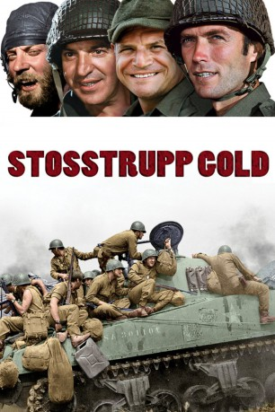
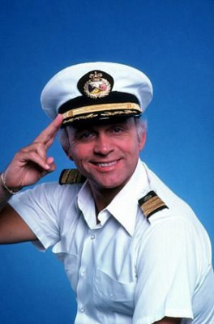

#4285 Stoßtrupp Gold
Alternativ: Kelly's Heroes
 
 IMDB-Wertung: 7.7 / 10
IMDB-Wertung: 7.7 / 10  Metascore: 0
Metascore: 0 
Es handelt sich um eine Mischung aus Kriegsfilm und Actionkomödie aus dem Jahr 1970 von Brian G. Hutton. Ursprung ist eine japanische Erzählung, die auch als Basis von Zwei Glorreiche Halunken diente. Der Film ist während des Zweiten Weltkrieges in Frankreich angesiedelt und dreht sich um eine Einheit der US-Army, die einen privaten Vorstoss wagen um sich zu bereichern.
Jahr: 1970
Dauer: 143 Minuten
FSK: 16
Land: Jugoslawien Studio: MGMTonspuren: DD1.0 - ,
Untertitel: Deutsch,
Auflösung: 1080p (1920x800) Größe: 12902 MB
Genre: Abenteuer, Komödie, Krieg
Regisseur: Brian G. Hutton
Drehbuch: Nikolaj Arcel
Soundtrack:
Darsteller:
 Clint Eastwood als Kelly
Clint Eastwood als Kelly Telly Savalas als Big Joe
Telly Savalas als Big Joe Don Rickles als Crapgame
Don Rickles als Crapgame Carroll O'Connor als General Colt
Carroll O'Connor als General Colt Donald Sutherland als Oddball
Donald Sutherland als Oddball-  Gavin MacLeod als Moriarty
 Stuart Margolin als Little Joe
Stuart Margolin als Little Joe- Richard Davalos als Gutowski
 Perry Lopez als Petuko
Perry Lopez als Petuko Harry Dean Stanton als Willard
Harry Dean Stanton als Willard Len Lesser als Bellamy
Len Lesser als Bellamy- David Hurst als Colonel Dankhopf
- George Savalas als Mulligan
 Karl-Otto Alberty als German Tank Commander
Karl-Otto Alberty als German Tank Commander- Ross Elliott als Booker
 Paul Picerni als M.P. Sergeant , scenes deleted
Paul Picerni als M.P. Sergeant , scenes deleted John Landis als Sister Rosa Stigmata , uncredited
John Landis als Sister Rosa Stigmata , uncredited Joe Mantell als General's Aid , uncredited
Joe Mantell als General's Aid , uncredited Yves Montand als German Sturmbannführer , uncredited
Yves Montand als German Sturmbannführer , uncredited- Hal Buckley als Maitland
- Jeff Morris als Cowboy
- Tom Troupe als Job
- Dick Balduzzi als Fisher
- Gene Collins als Babra
- Fred Pearlman als Mitchell
- Michael Clark als Grace
- George Fargo als Penn
- Dee Pollock als Jonesey
 John G. Heller als German Lieutenant
John G. Heller als German Lieutenant- Shepherd Sanders als Turk
- Phil Adams als Third Tank Commander
- Hugo De Vernier als French Mayor
- Frank J. Garlotta als Tanker
- Harry Goines als Supply Sergeant
- David Gross als German Captain
 Sandy McPeak als Second Tank Commander
Sandy McPeak als Second Tank Commander- James McHale als Guest
- Robert MacNamara als Roach
- Read Morgan als U.S. Lieutenant
- Tom Signorelli als Bonsor
- Donald Waugh als Roamer
- Vincent Maracecchi als Old Man in Town
- Zvonko Jovcic als German M.P. , uncredited
- Lee Miller als Soldier #1 , uncredited
- Tony Wheeler als Gen. Colt's Driver , uncredited
- Jerry Whittington als US Soldier , uncredited
Datei: X:\1970\Stoßtrupp Gold (1970, FSK16, 1920x800).mkv seit 31.08.2016
Festplatte: HD 1900-1970
 Es gibt insgesamt 24 Filme in der Gruppe '1970'
Es gibt insgesamt 24 Filme in der Gruppe '1970'